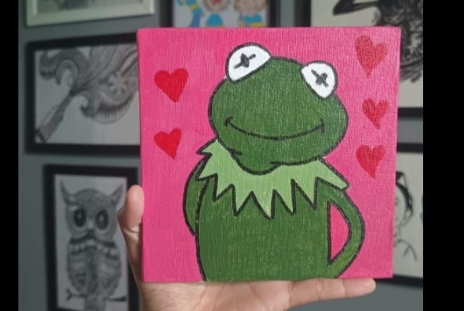

Hopeless In Love

With hearts afloat on a rosy sky,
And stars of love in each wide eye,
Kermit stands with subtle charm,
One hand tucked, the other calm.
A little blush, a bashful grin,
A green frog lost in thoughts within.
No need for words or grand display,
His smile says all he wants to say.
Perhaps it’s love, or maybe glee,
Or daydreams sipping sweet iced tea.
But either way, he's clearly caught—
In that soft, warm, fluttery thought.
So if you're feeling just a bit shy,
Take a cue from this froggy guy.
Love is quiet, sweet, and true—
Just like Kermit smiling at you. ‚ù§Ô∏èüê∏